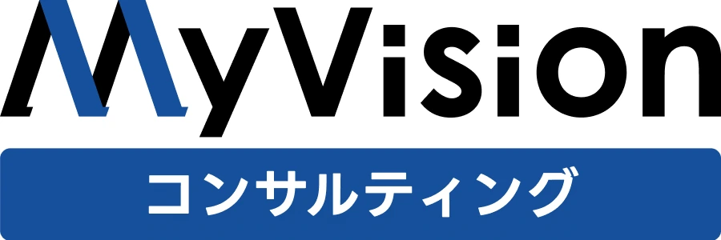
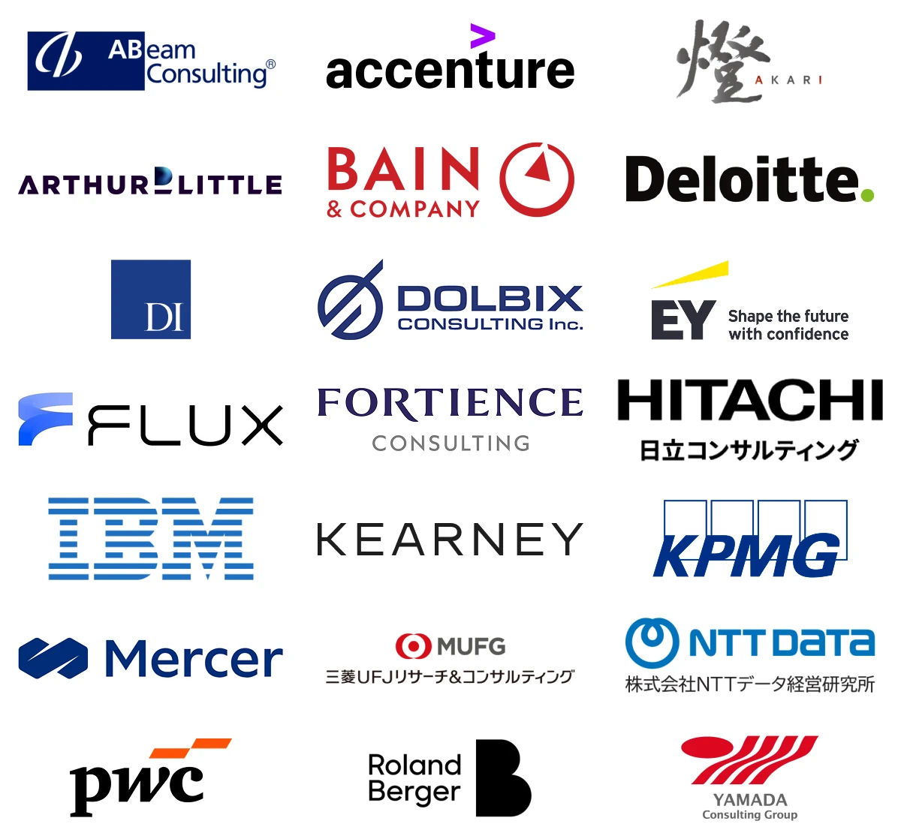

コンサル転職選考会を開催しているコンサルティングファーム（本年度例）
直近開催予定の一例です。掲載外の選考会・求人もご紹介できます。
ご応募はエージェント経由で
選考会の枠には限りがあるため、各ファームともにエージェントでの初回面談後に応募を受け付けています。
コンサル転職No.1※1エージェントのMyVisionコンサルティングなら、掲載外の求人もご紹介可能です。
MyVisionコンサルティングの登録フォームへ移動します
「面接→合否→次回調整」を繰り返すことで長期間におよぶ通常選考と違い、面接ステップが1日に集約される選考ルートです。
積極採用中企業が実施するため、内定に繋がりやすいのも特徴です。
エントリーから内定まで、最短9日間（弊社実績）
面接1日、結果は最短当日
土日・オンライン開催が中心
書類作成・ケース面接練習のサポート付き
通常選考との併用OK
ご応募はエージェント経由となります。
各ファームともにエージェントでの初回面談後に応募を受け付けています。
狙う領域と進め方を、担当キャリアコンサルタントと一緒に整理しましょう。
MyVisionコンサルティングの登録フォームへ移動します
30代前半までにコンサル業界に転職することには、以下のメリットがあります。
経営アジェンダに
早くから関われる
若手のうちから経営層と同じ論点を扱うため、仕事を見る視座が一段上がる。
キャリアの幅が
広がる
論理的思考などのポータブルスキルが身につくため、ポストコンサルでも引く手あまた。
年収が上がりやすい
37歳で年収の中央値が1,000万円を突破。生涯年収に大きな差が生まれます。
年齢別 年収中央値の推移
※ 2026年8月25日時点 株式会社MyVisionご登録者様データによる年齢別の年収中央値（n=35,118）。各年齢のサンプル数はコンサル勤務33〜506件／その他業種188〜2,983件となります。
「コンサルにするか」から、一緒に考えましょう。
面談は、選考に進む前提の場ではありません。「今は転職しない」、「コンサルには転職しない」という結論でも構いません。キャリアプランによっては現職残留を弊社からお勧めすることもございます。
迷っている段階で相談するMyVisionコンサルティングの登録フォームへ移動します
ご登録から最短2週間で内定。入社時期は相談可能です。
無料エージェント面談
オンライン30〜60分狙う企業と進め方を整理する、キャリアの作戦会議。
求人・選考会のご紹介
メール・LINE等強引な応募誘導などはございません。
書類応募・ケース面接対策
オンライン・回数無制限職務経歴書の添削と、ケース面接の企業ごと対策。
選考会当日
土日・オンライン中心企業説明・複数回の面接を当日実施。
内定・入社
条件交渉もサポート年収交渉・入社日調整まで、弊社が対応します。
面談から入社後のフォローまで、費用は一切かかりません
その多くが、コンサル未経験からの転職です。
28歳・男性メーカー 法人営業
年収 480万 → 720万
未経験で無理だと思っていましたが、何度も書類添削・面接対策をしていただいたのが効きました。
31歳・男性SIer システムエンジニア
年収 620万 → 880万
現職が忙しくても、土曜開催で面接が1日で終わる形は本当に助かりました。
26歳・女性地方銀行 営業
年収 450万 → 680万
第二新卒枠を紹介してもらいました。業界について詳しく聞けたので、コンサルでやっていけそうかという不安のない状態で面接に臨めました。
34歳・男性機械メーカー 企画職
年収 800万 → 1,100万
他のエージェントさんから30代未経験は厳しいと言われましたが、業界知見が評価される求人で選考に通過しました。
29歳・女性人材会社 法人営業
年収 520万 → 780万
ケース面接練習で、悪い癖を徹底的に指摘していただいたのが内定に繋がりました。
27歳・男性地方公務員
年収 430万 → 650万
公共案件の部門で大手の求人があると知らず、諦めかけていました。面談で選択肢が増えました。
※ 掲載の写真はイメージです。
※1 厚生労働省職業安定局 人材サービス総合サイトおよび各社決算資料より、2024年10〜2025年3月におけるコンサル特化転職エージェントの支援実績数から弊社推計。 ※2 2026年8月25日時点
マンツーマン・複数回のケース面接対策
必要なだけ、面接の対人練習が可能です。
選考会以外の通常選考の求人も多数
No.1エージェントだから、網羅的に求人をご用意しております。
職務経歴書は構成から一緒に作成
「コンサルに受かる書類」にはノウハウがあります。
年収交渉から入社後までフォロー
年収アップ交渉もしっかり対応、入社後の立ち上がりまで支援します。
ご紹介企業例（一例）

※ 累計716社の紹介実績。上記は一例となります。
まずは、無料面談から。
ご登録は1分、面談はオンライン30分から。
転職を決めていない段階のご相談も歓迎です。
MyVisionコンサルティングの登録フォームへ移動します